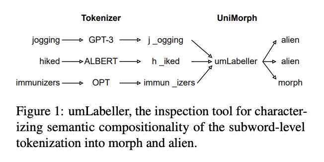

|
Omri Uzan
I am a student researcher at BGU CS,
working at the intersection of Machine Learning and Natural Language Processing,
advised by Yuval Pinter.
|
Research
I am broadly interested in understanding language models as modular systems,
developing effective system-level evaluations, and designing methods for smoother end-to-end optimization.
|
Preprints |
|

|
Evaluating Subword Tokenization: Alien Subword Composition and OOV Generalization Challenge
Khuyagbaatar Batsuren, Ekaterina Vylomova, Verna Dankers, Tsetsuukhei Delgerbaatar, Omri Uzan, Yuval Pinter, Gábor Bella arXiv |
Papers |

|
Tokenization Is More Than Compression
Craig W. Schmidt, Varshini Reddy, Haoran Zhang, Alec Alameddine, Omri Uzan, Yuval Pinter, Chris Tanner EMNLP, 2024 (Oral Presentation) ACL Anthology / arXiv |

|
Greed is All You Need: An Evaluation of Tokenizer Inference Methods
Omri Uzan, Craig W.Schmidt, Chris Tanner, Yuval Pinter ACL, 2024 (Oral Presentation) 🏆Outstanding Paper Award🏆 🏆Senior Area Chair Paper Award🏆 ACL Anthology / arXiv |
News
01.25 - Giving a talk on 'Greed is All You Need: An Evaluation of Tokenizer Inference Methods' at NLP-IL Journal Club.
|
This website is based on Jon Barron's website (source code here).